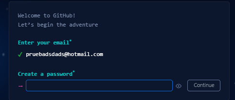
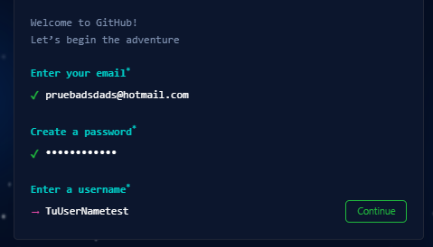

¿Que es GitHub?
GitHub es una plataforma de alojamiento de código fuente que utiliza Git para proporcionar herramientas de colaboración, control de versiones y gestión de proyectos. Permite a los desarrolladores alojar sus repositorios Git, colaborar en el código, y acceder a funciones adicionales como seguimiento de problemas, revisiones de código y CI/CD.
Crear una cuenta en GitHub
Para poder crear una cuenta de GitHub, tenemos que ir a su pagina web https://github.com/signup y seguir cada paso que se nos indica. (La pagina es unicamente en Ingles)
1. Poner nuestro correo electronico
2. Luego una contraseña bastante fuerte

3. y finalmente nuestro nombre de usuario

Diferencias y similitudes entre Git y GitHub
Git es un sistema de control de versiones que permite a los desarrolladores gestionar y seguir los cambios en el código fuente de sus proyectos de manera colaborativa.